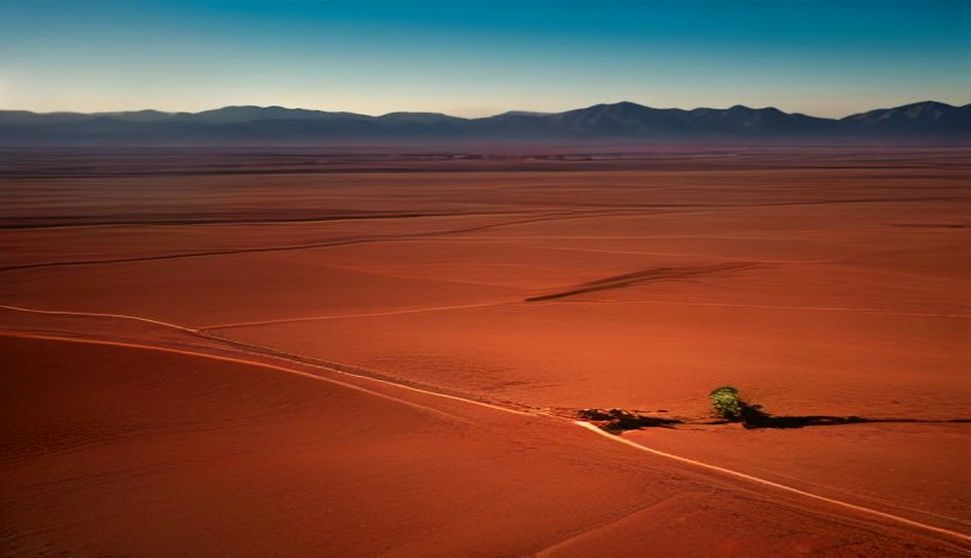
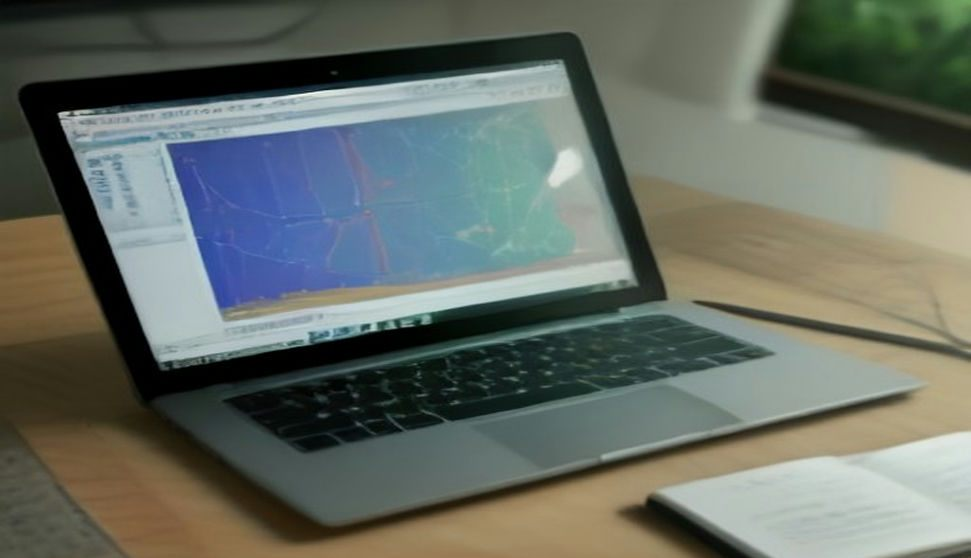

Construcción y cimentaciones
Estratigrafía, rigidez del suelo y profundidad de roca para diseñar cimentaciones seguras.

Estudios geofísicos · México
Exploración geofísica no destructiva para geotecnia, agua subterránea, minería e infraestructura. Atención directa con la especialista, de la cotización al informe.
Servicios
Elige un método para ver los estudios disponibles. Si no sabes cuál necesitas, cuéntanos tu proyecto y te recomendamos el más adecuado.
Aplicaciones
Estratigrafía, rigidez del suelo y profundidad de roca para diseñar cimentaciones seguras.
Ubicación de sitios para perforar pozos y estimación de la profundidad del acuífero.
Vs30, periodo del sitio y clasificación sísmica para cumplir con normas y reglamentos.
Detección de cuerpos minerales, fallas y estructuras con IP, magnetometría y gravimetría.
Carreteras, presas, bordos y túneles: cavidades, rellenos, zonas débiles y azolve.
Varillas, recubrimiento, ductos embebidos y espesores antes de perforar o reforzar.
Cómo trabajamos

Sobre nosotros
Soy Brenda Pamela, geofísica. Fundé BP Geofísica para ofrecer estudios del subsuelo con rigor técnico y trato cercano: quien te cotiza es quien planea, mide e interpreta tu proyecto.
Preguntas frecuentes
Depende del método, la longitud de las líneas o el número de puntos, la ubicación y el acceso al sitio. Envíanos los datos del proyecto y te mandamos una cotización sin costo.
Sí. Cuéntanos qué quieres saber (profundidad de la roca, si hay agua, si hay cavidades, la clasificación sísmica, etc.) y te recomendamos el método o la combinación más eficiente.
El trabajo de campo de un estudio típico toma de 1 a 3 días. El informe se entrega normalmente entre 5 y 10 días hábiles después de terminar el campo.
Sí, nos trasladamos a donde esté tu proyecto. Los viáticos se incluyen de forma transparente en la cotización.
Objetivo, metodología, ubicación de líneas o puntos, secciones o modelos procesados, interpretación geológica-geotécnica, conclusiones y recomendaciones.
No, los complementan. La geofísica cubre grandes áreas de forma rápida y económica y ayuda a decidir dónde perforar, lo que reduce el número de sondeos necesarios.